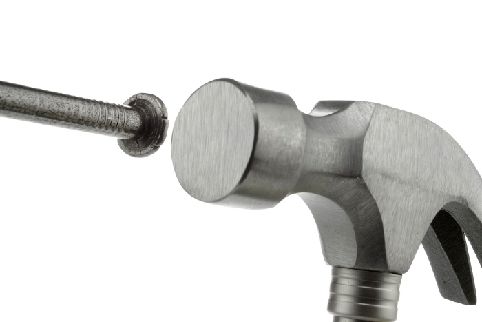

10.14.2016
All too often, technology and design decisions are made based not on a desire to choose the best materials and tools for the job but on ideology.
The Web standards advocate who blindly recommends the Web platform and native Web authoring technologies for any project, regardless of the users needs is, unfortunately, all too common. Web practitioners who blindly recommend Wordpress or native iPhone or iPad apps for any project are all too common, too.
The old saying “When all you have is a hammer, everything looks like a nail” comes to mind. So, it is important to recognize such biases and to base your decisions on the needs of your users, not on ideology. It is also important to be able to recognize ideological views so that you can steer the discussion back into the realm of design.